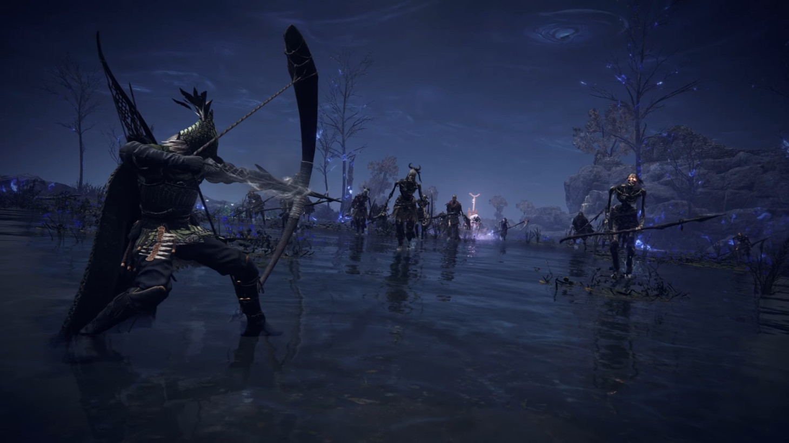

Lore of Ironeye
Ironeye is an archer shrouded in mystery. He arrived in Limveld on the orders of a secretive handler with orders to dispatch the nightlord. He is a ghost who must resource his own operation until his charge is complete.
Ironeye readies his ultimate art, the powerful Single Shot.
Ironeye's Gameplay
- Ironeye's primary role in a party is support. He empowers the party with buffs to damage, item discovery, and the ability to revive teammates from a distance.
- His passive ability increases item discovery for the entire party. Finding better equipment can make the difference between victory and defeat.
- His character skill sees Ironeye leap forward with a dagger. On contact with an enemy, the dagger will mark that foe, buffing allies' attacks and resulting in a burst of damage if the party lands enough hits to break the mark before it fades away. This skill also allows Ironeye to clip through enemies, making it just as much a tool for mobility as damage dealing.
- Ironeye's ultimate art is Single Shot, a powerful missile of an arrow loosed from his bow. After a brief animation in which Ironeye steadies his aim, he looses the arrow, which will almost always hit the targeted enemey regardless of positioning or terrain. A column of wind follows the path of the arrow, and any enemies touched by this column will take damage as if they had been hit by the arrow itself.
Optimizing Party Composition with Ironeye
- Ironeye is arguably the best complement to any possible party configuration in Elden Ring Nightreign.
- His item discovery, damage buffing, and capacity to revive at distance are useful in concert with all characters.
- Ironeye and Raider make a particularly potent duo. Raider's ultimate art totem provides Ironeye an elevated platform from which he can fire upon foes largely unimpeded.
- With that said, be wary of using Ironeye alongside other squishy characters who tend to operate in the backfield, like Reclue and Revenant. While DPS likely won't suffer, these characters need a tankier character, such as Guardian to draw aggro to perform optimally.